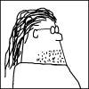

Are complex CSS issues making your programmers crazy?
I've provided advanced CSS consulting for
Milo  and many other big sites.
and many other big sites.
Hire me to help you too.
Big John's CSS Webinars!
Let Big John (yours truly) teach you about CSS in a setting where you can actually ask questions. Will wonders never cease? Learn about the cascade and its arcane mysteries, or dive into the cesspool of IE6 with Big John as your lifeguard.
Besides upcoming webinar dates, you can also download recorded versions of previous webinars (some free, some for sale).
Return to Articles
Return to p.i.e.
This article has been revised as of May 2009 to add improvements to the method which
make it possible to have only a single drop shadow image, rather than the three that
were required in the original version. The obsolete three-image all-around shadow method
when discussed in this article will be referred to as the "previous version."
This new simplified version of the method was inspired by a question from
Antonio Vong, who
asked if it was possible to make it work with only one big shadow image. I had previously
thought not, but further thought led me to develop the rather obvious revised method
explained here, oy. Thanks, Antonio!
Special Notice: I've written a
tutorial for making drop shadows, using the free Gimp
graphics editor. Enjoy!
On the Web:
Go see how Scott Schiller achieved
this same four-sides PNG effect.
Nice use of scripting on the demo page too!
From Paris, Matthieu Larcher has a new
custom buttons tutorial
based on the four-sides method. Woohoo!
In the PNG Drop Shadows article we explored a new CSS method that uses the PNG image format to apply drop shadows to any arbitrary box, producing excellent looking shadows. That's great, but the method limits us to having shadows on just two sides of the content box. Clients aren't going to be satisfied with that stricture for very long, so we need to pump up our shadows to cover all four sides of the box, just in case.
Okay, normally drop shadows are not used all the way around a box, but some designers want it, and what about a 360 degree "glow" effect? Lots of people can go for that, right?
Before delving into the guts of the new method, check out a separate demo page showing a live example of an all-around glow effect in all its glory. Note that the demo page uses hovering to modify the background-position property on the div group, but this is just a visual extra and isn't needed for the new shadow method to work.
Browser Disclaimer
As with the old two-sided method, the four-sided method does NOT work in IE6/Win, due to the lack of support for semi-transparent PNG images. That browser needs to be given dumbed down code via hiding hacks so that it gets just the content object and not any of the shadow trickery. If older browsers must display exactly like modern ones, you might want to avoid using this method for the time being.
The basic method described here works flawlessly in IE7+, Firefox, Opera, and Safari.
Alert! Class name changes ahead...
In PNG Drop Shadows the DIV classes were named .outerpair1, .shadowbox, and so forth. This time we'll dispense with descriptive names and go with a simple numerical system, using the classes .shadow-one, .shadow-two, on up to .shadow-four, along with two new empty divs (.corner-a and .corner-b) that are placed inside .shadow-one, but before the .shadow-two div starts. Since the group of six div tags will never need altering, it's simpler and more intuitive to use a number-based class system. This arrangement makes it almost impossible to accidentally mix-up the order of the div group.
While it's true that this method uses two more divs than the old method, it can still be used to handle the old method by updating the old CSS to reflect the new class nomenclature and by keeping the two new empty divs unstyled. Without any styling applied, those divs will have no visible effect on the old method.
This way you can use the new html generically across a site, applying either method with ease and complete safety. Cool!
The Basic Code
The following HTML is all you need:
<div class="shadow-one">
<div class="corner-a"></div>
<div class="corner-b"></div>
<div class="shadow-two">
<div class="shadow-three">
<div class="shadow-four">
Content...
</div></div></div></div>
The CSS for the new four-sided method is similar to the two-sided method, but there's a few differences. Here's what the new CSS code looks like:
.shadow-one {
position: absolute;
padding-top: 100px;
padding-left: 100px;
}
.corner-a {
position: absolute;
right: 0;
top: 0;
width: 100px;
height: 100px;
background: url(shadow.png) right top no-repeat;
}
.corner-b {
position: absolute;
left: 0;
bottom: 0;
width: 100px;
height: 100px;
background: url(shadow.png) left bottom no-repeat;
}
.shadow-two {
background: url(shadow.png) right bottom no-repeat;
}
.shadow-three {
position: relative;
left: -100px;
top: -100px;
background: url(shadow.png) left top no-repeat;
}
.shadow-four {
position: relative;
left: 50px;
top: 50px;
}
Making the Images
Besides the code above, the method requires a shadow image The graphic to the left shows a scaled down example of the full image, which has a semi-transparent shadow surrounding a large transparent rectangular area. The actual PNG image used should be as large as needed to cover any desired content box. The images need to be transparent (other than the shadow or glow itself) so that body background patterns and the like will be visible thru them.
The center does not really need to be transparent, but if you ever want something behind the div group to "show thru" some part of the content area, it will have to be transparent for that to happen. Just be sure that the distance between the outer image edge and the inner shadow edge is precisely the length you intend. In the case of this article I've chosen 50px as the width of this shadow zone.
Making the image is simple if you have access to a good graphics program. Check out my tutorial for making drop shadows in Gimp.
If you don't want RGB color in your shadows or glows, you may convert the PNG to grayscale, greatly reducing the final file size of the images. I used Gimp 2 to do this and cut about 40% off the weight of the files.
Analysis of the Method
The graphics that follow have colored borders and backgrounds for some areas to better illustrate the method, but these borders and background colors would not be used in an actual production page.
.shadow-one {
position: absolute;
padding-top: 100px;
padding-left: 100px;
}
/* Use position: relative when
not using position: absolute */
The outer div gets some method (absolute positioning in this case) to make it "shrink-to-fit" and collapse all the divs in the group around the content element. Floating or a width applied to the div or a surrounding container can also do the trick. In most cases the content element should have either an intrinsic or stated width, so that the shrink-to-fit behavior on .shadow-one has something rigid to collapse against.
If you want to float this div rather than absolutely position it, make sure you apply position: relative; so the two small corner divs remain inside and don't fly away to some positioned parent further out (the HTML element is the default positioned parent, btw).
No background is applied here (unlike previous version) but top and left paddings are applied (dotted red lines) to constrain .shadow-two into a smaller area. The .shadow-one div is required to be positioned as absolute, relative, or fixed, so that the corner divs will use .shadow-one as a positioned base for their own locations. If you want to float this div, use relative positioning.
.corner-a {
position: absolute;
right: 0;
top: 0;
width: 100px;
height: 100px;
background: url(shadow.png) right top;
}
This div is empty and is positioned to the upper right corner of .shadow-one so that its background is showing the upper right corner of shadow.png. Note that the padding on .shadow-one has no effect on any absolutely positioned children, which only care about the actual edges of their positioned parent.
.corner-b {
position: absolute;
left: 0;
bottom: 0;
width: 100px;
height: 100px;
background: url(shadow.png) left bottom;
}
This empty div is positioned to the lower left corner of .shadow-one, and its background shows shadow.png's lower left corner.
.shadow-two {
background: url(shadow.png) right bottom;
}
This div has only one purpose, to show shadow.png aligned into its lower right corner. The padding on .shadow-one is exactly the same size as .corner-a and .corner-b, so all three divs adjoin perfectly without overlaps, and so do the shadow images they have as backgrounds.
.shadow-three {
position: relative;
left: -100px;
top: -100px;
background: url(shadow.png) left top;
}
Relative positioning is used along with negative left and top values to drag this div up and left by exactly the size of the corner divs. This shift automatically places .shadow-three in precisely the spot needed to complete the four-sided drop shadow.
Again shadow.png is applied, but this time in the upper left corner of the div. Now the four sided shadow is complete, but the current div is in the wrong location for the content. Next we'll get that content into the correct spot.
.shadow-four {
position: relative;
left: 50px;
top: 50px;
}
The innermost div in the group is relatively shifted down and to the right by exactly half of the corner div size, placing it directly over the empty region within all those shadow images. Now any content elements within will have nice all-around shadows that automatically adjust to any content size, as long as that size does not exceed the size of shadow.png.
The intrinsic or stated width of the content will control the width of the entire div group as it shrinks horizontally and vertically around that content. Note that rendered heights of divs are shrink-to-fit by default, and the height of even irregular content like a text block won't be a problem once the width of that block is controlled in some way.
When you want to shadow an image...
In the event your doctype is "strict," any IMG elements will, by default, show a 3px space below the image. This baseline space is meant to allow character descenders (like the hook on a lowercase j) a space where they can show. To avoid the space, just make sure the image is given display: block; and no baseline space will be added.
IE6 Comment Bug Discovered, January 2009
Just when we thought IE6 had no more surprises to reveal, along comes yet another type of HTML comment bug to throw on the pile, and it has chosen to attack my baby, the PNG Drop Shadow technique.
This time it's personal.
Discovered by one Judebert (self-portrait to left), the "unpleasantness" has the effect of hashing-up the drop shadows when ordinary HTML comments are inserted between certain of the starting div tags in the shadow group. Apparently the presence of those comments is affecting or disrupting the relative positioning used in the technique. Nice catch, Judebert!
Using hasLayout via the "zoomfix" on the divs will stop the bug, but then the shrink-to-fit behavior is disabled, so that's no-go. The proper fix is obvious: Just don't use comments in the div group like poor Judebert did and you'll be okay.
About the Live Demo
In a production page it would be useful to separate out the background-image calls from the rules for the divs and create a multiple selector rule that would apply the background to all those divs at once. The background-position for each div would be applied individually. This way you can change the shadow image by editing just the path in a single background-image call rather than in four different places. The live demo employs that trick.
Be aware that the live demo has the background-position values set to hide all the backgrounds off-screen, to be pulled into the divs when the outer div is hovered. That's really cool to look at, but it's not required for the method to work. Therefore this discussion deals only with the basic method and doesn't detail how to change BG positions during hover. Study the live demo code if you're curious about the way this is handled.
Hybrid Uses
By now you may have realized that this four-sides method is not confined only to shadows and glows. Indeed, any reasonably clean frame-like image may be adapted to surround any arbitrary content box. The image below has been "framed" via the method, incorporating both a solid visual element and a drop shadow into a single displayed frame.
Go ahead and hover the live demo below to resize the content image and div group, showing how the frame/shadow automatically adjusts to fit the content size.
The method clips off the large BG image at some unknown spot that's different for each content dimension, so for it to work well you need to stay away from some frame designs. It would not do to have a row of smiley faces, only to have one of them get clipped right thru the middle!
Conclusion
So there you are, a nice clean way to frame content that's bulletproof in all modern browsers later than IE6, along with the potential to use hovering in a number of interesting ways. Next time I'll discuss one of those ways in detail, but until then, enjoy!
Big John Design
Contact Us
©positioniseverything.net
Last updated: April 12, 2010
Created November 4, 2008